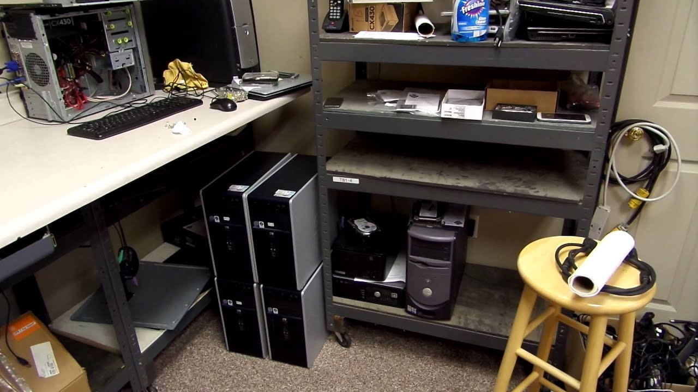

Tervetuloa Bittiapu NYT -sivuille!
Bittiapu NYT on nuoren yrittäjän perustama tietokonehuoltopalvelu, joka tarjoaa nopeaa ja luotettavaa apua kaikenlaisiin tietokoneongelmiin. Toimimme vastuullisesti ja kestävästi antamalla vanhoille koneille lisää elinaikaa ja vähentemällä turhaa elektroniikkajätettä. Meiltä saat asiantuntevaa palvelua helposti ja edullisesti.

Miksi valita meidät?
Tarjoamme henkilökohtaista palvelua, reilun hinnoittelun ja aidon halun auttaa. Olen NYT-yrittäjä, joten samalla kun tuet pienyrittäjyyttä, saat myös käytännönläheistä ja huolellista tietokonehuoltoa. Työmme perustuu luottamukseen, tarkkuuteen ja asiakkaan tyytyväisyyteen.